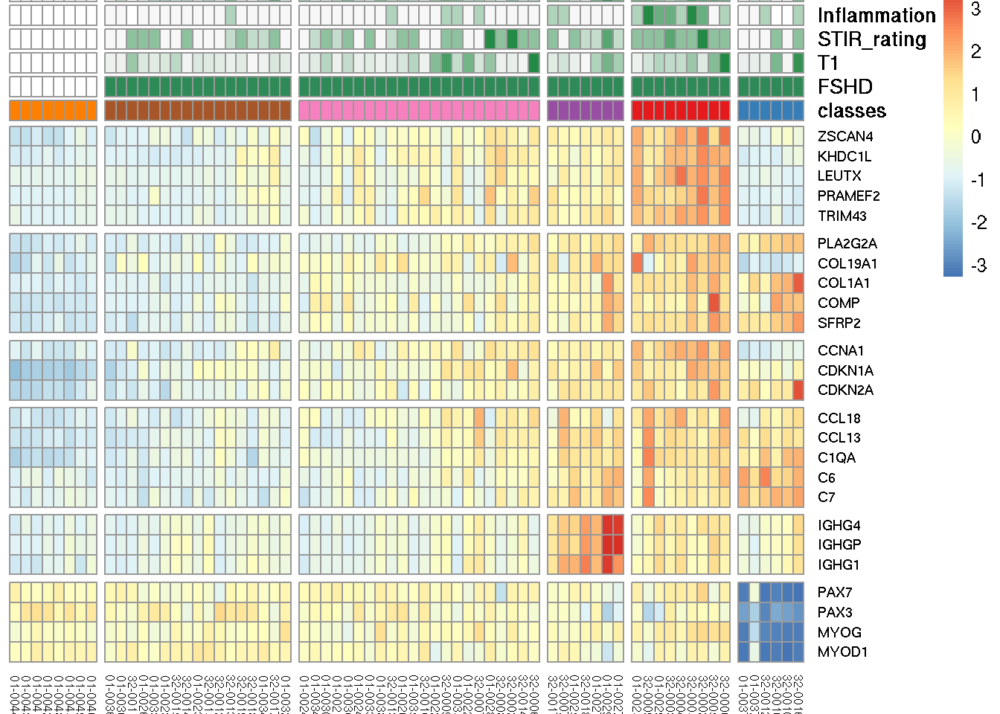
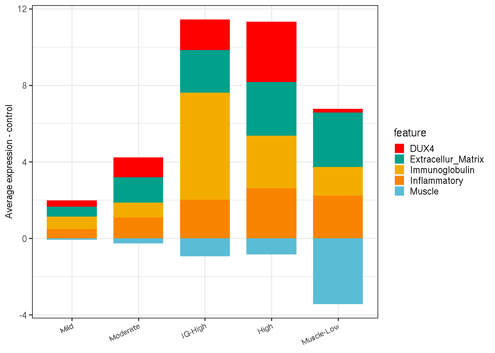

Chapter 5 Classes of RNA-seq biopsy sampels
To better understand the differences between different FSHD samples and identify sub-groups and their characteristics, we combine the RNA-seq gene expression matrics from the first and follow-up visit samples and apply k-means clustering on the sample space build upon selected features. We are able to find five anchor samples and partition all FSHD and controls into five clusters, each of which has unique characteristics.
5.1 FSHD classes
Steps below explained how the samples are paritioned into five clusters:
1. Feature selection: select features that are best characterize the cluster patterns of PCA sample space built on all samples. We end up select the differentially expressed genes in the samples characterized by high expressed DUX4-regulated and inflammatory response genes (cc_sample), as well as muscle development related genes. The feature space is reduced to 705 informative features (Supple. Table S4 and Suppl. Fig. S5B).
2. Sample space construction: use previous selected featrues and their regularized log expression to build sample sapce by PCA. The dimension is then reduced. 3. K-means clusterings: based on the PCA sample space and k-mean cluster is used to partition all samples into five clusters. To enchance the stability of k-means algorithm, we select five anchor samples (01-0041, 01-0022-1, 01-0029b,32-0002b1, 32-0012b) representing the center of each cluster.
5.1.1 Load datasets and libraries
# load datasets and libraries
library(BiocParallel)
multi_param <- MulticoreParam(worker=2)
register(multi_param, default=TRUE)
suppressPackageStartupMessages(library(DESeq2))
suppressPackageStartupMessages(library(xlsx))
suppressPackageStartupMessages(library(ggplot2))
suppressPackageStartupMessages(library(tidyverse))
suppressPackageStartupMessages(library(pheatmap))
suppressPackageStartupMessages(library(ggrepel))
suppressPackageStartupMessages(library(gridExtra))
pkg_dir <- "/fh/fast/tapscott_s/CompBio/RNA-Seq/hg38.FSHD.biopsy.all"
source(file.path(pkg_dir, "scripts", "manuscript_tools.R"))
load(file.path(pkg_dir, "public_data", "mri_pathology.rda"))
load(file.path(pkg_dir, "public_data", "sanitized.dds.rda"))
load(file.path(pkg_dir, "public_data", "sanitized.rlg.rda"))
load(file.path(pkg_dir, "public_data", "cc_sample.rda"))
load(file.path(pkg_dir, "public_data", "mri_pathology.rda"))5.1.2 Feature selection
The FSHD samples that exhibit strong DUX4 and inflammatory signatures are
ccp <- cc_sample %>% filter(DUX4_group == "DUX4+") %>%
filter(cc_intensity != "cc++")
knitr::kable(ccp, caption="Samples showing strong DUX4 and inflammatory signatures.")| sample_name | cc_group | DUX4_group | pheno_type | visit | cc_intensity |
|---|---|---|---|---|---|
| 32-0005b | cc+ | DUX4+ | FSHD | II | cc+ |
| 32-0002b1 | cc+ | DUX4+ | FSHD | II | cc+ |
| 32-0003 | cc+ | DUX4+ | FSHD | I | cc+ |
| 01-0029 | cc+ | DUX4+ | FSHD | I | cc+ |
| 32-0005 | cc+ | DUX4+ | FSHD | I | cc+ |
| 32-0004 | cc+ | DUX4+ | FSHD | I | cc+ |
| 32-0006 | cc+ | DUX4+ | FSHD | I | cc+ |
| 01-0025 | cc+ | DUX4+ | FSHD | I | cc+ |
Select the up-reguated differentially expressed genes in DUX+/inflammed+ samples relative to the controls (adjusted \(p\)-vlaue < 0.05 corresponding to \(H_0: |lfc| = 2\)). This set of genes are informative in sample variation.
keep <- colnames(sanitized.dds) %in% ccp$sample_name |
sanitized.dds$pheno_type == "Control"
dux4_dds <- sanitized.dds[, keep]
design(dux4_dds) <- ~ pheno_type
dux4_dds <- DESeq(dux4_dds)
dux4_res <- results(dux4_dds, alpha=0.05, lfcThreshold=2)
#' tidy up the up-regulated
df_up <- as.data.frame(dux4_res) %>%
rownames_to_column(var="gencode_id") %>%
dplyr::filter(padj < 0.05 & log2FoldChange > 0) %>%
mutate(gene_name = rowData(dux4_dds[gencode_id])$gene_name) %>%
mutate(gene_id =
sapply(strsplit(gencode_id, ".", fixed=TRUE), "[[", 1))Another set of genes that are also informative in terms of sample variation is the muscle development related genes (code below). We hereby select these two set of genes as our most informative features to construct sample space.
# muscle related, mostly differentially down-regulated in the biopsies with less muscle content
muscle <- c(
"MYF5", "MYF6", "MYH1", # newly added
"MYH13", "MYH2", "MYH4", "MYH6", "MYH7", # newly added
"MYHAS", "MYL1", "MYL2", #newly added
"MYO18B", "MYOD1", "MYOG", "MYOM2", "MYOM3",
"MYOT", "MYOZ1", "MYOZ2", "MYOZ3", "PAX7", "PAX3")
de_markers <- c(df_up$gencode_id, unname(get_ensembl(muscle, sanitized.rlg)))5.2 Sample space and k-means clustering
Defining anchor samples helps to stablize the k-means clustering.
#' anchar_sample: 01-0041 (control), 32-0002, "01-0029b", "32-0002b1", and "32-0012b"
anchor_sample <-
data.frame(label = c("A", "B", "C", "D", "E"),
sample_name = c("01-0041", "01-0022-1", "01-0029b","32-0002b1", "32-0012b"),
stringsAsFactors=FALSE)Build sample space by PCA and call up k-means algorithm.
#' (3b) k-means (k=5) on PCA of de_markers
k <- 5
data <- assay(sanitized.rlg[de_markers, ])
pca <- prcomp(t(data))
#cl <- kmeans(pca$x, centers=k, iter.max=15, nstart=5)
cl <- kmeans(pca$x, centers=pca$x[anchor_sample$sample_name, ], iter.max=15).rename_cluster_5 <- function(sample_name) {
anchor_samples <- c(A = "01-0041", B = "32-0002", C = "01-0029b",
D = "32-0002b1", E = "32-0012b")
i <- which(anchor_sample$sample_name %in% as.character(sample_name))
names(anchor_samples)[i]
}
rename_cluster <- function(cl, k) {
df <- data.frame(sample_name=names(cl$cluster),
cluster=cl$cluster)
tmp <- df %>% group_by(cluster) %>%
summarise(rename_cluster=.rename_cluster_5(sample_name))
df <- df %>% mutate(renamed=tmp$rename_cluster[cluster])
}
.face_off_cluster <- function(old_name) {
new_name <- c(A="Mild", B="Moderate", C="IG-High", D="High", E="Muscle-Low")
factor(new_name[old_name], levels=new_name)
}
cluster_color <- c(A_Cntr="#ff7f00", A="#a65628", B="#f781bf", C="#984ea3", D="#e41a1c", E="#377eb8")
cluster_df <- rename_cluster(cl, k) %>%
mutate(RNA_cluster = ifelse(sanitized.rlg$pheno_type == "Control",
paste0(renamed, "_Cntr"), renamed)) %>%
mutate(RNA_cluster = factor(RNA_cluster, levels=c("A_Cntr", "A", "B", "C", "D", "E"))) %>%
mutate(color = cluster_color[as.character(RNA_cluster)]) %>%
mutate(new_cluster_name = .face_off_cluster(renamed))
sanitized.rlg$RNA_cluster_5 <- sanitized.dds$RNA_cluster_5 <- cluster_df$RNA_cluster5.3 Visualize the FSHD classes
Showing below is the visualization of FSHD sample space reduced to two dimensions by PCA’s first two components. Colors represent classes clustered by k-means. Cluster A are renamed to Mild, B to Moderate, C to Immunoglobulin-High (IG-High), D to High and E to Muscle-Low.
data <- plotPCA(sanitized.rlg,
intgroup=c("RNA_cluster_5", "pheno_type"), returnData=TRUE)
percentVar <- round(100 * attr(data, "percentVar"))
gg <- ggplot(data, aes(PC1, PC2, color=RNA_cluster_5)) +
geom_point(size=0.8) +
#xlab(paste0("PC1: ",percentVar[1],"% variance")) +
#ylab(paste0("PC2: ",percentVar[2],"% variance")) +
labs(title="Principal components on initial and follow-up visits") +
geom_text_repel(aes(label=rownames(data)), size=2.2, show.legend=FALSE) +
theme_bw() +
scale_color_manual(name="Classes", values=cluster_color) +
#scale_color_brewer(palette="Set2") +
theme(legend.position="right",
plot.title = element_text(hjust = 0.5, size=10))
gg5.4 View by selected marker genes
We selected informative biomarkers of six FSHD relevant biological functions and illustrate the characteristics of FSHD classes by heatmap. Row gaps separated by (top to bottom) DUX4-regulated, extracellular matrix, cell cycle, immune/inflammatory response, immunoglobulin and muscle development related. Column gaps separate RNA-seq clustered groups, A-E. Color scale corresponds to row z-score of regularized log2 expression.
robust_markers <- list(dux4 = c("ZSCAN4", "KHDC1L", "LEUTX",
"PRAMEF2", "TRIM43"),
cellular_matrix=c("PLA2G2A", "COL19A1", "COL1A1",
"COMP", "SFRP2"),
cell_cycle=c("CCNA1", "CDKN1A", "CDKN2A"),
inflam=c("CCL18", "CCL13", "C1QA", "C6", "C7"), # CCL18 is good for seperate control & FSHD
immunoglobulin = c("IGHG4", "IGHGP", "IGHG1"),
muscle = c("PAX7", "PAX3", "MYOG", "MYOD1")) marker_id <- unlist(lapply(robust_markers, get_ensembl, sanitized.rlg))
data_lst <- lapply(levels(sanitized.rlg$RNA_cluster_5), function(x, rlg) {
s <- colnames(rlg)[rlg$RNA_cluster_5 == x]
data <- assay(rlg[marker_id, s])
# re-arrange by the colmeans (look heatmap)
Colv <- colMeans(data, na.rm = TRUE)
data <- data[, order(Colv)]
}, rlg=sanitized.rlg)
data <- do.call(cbind, data_lst)
rownames(data) <- rowData(sanitized.rlg[rownames(data)])$gene_name
zscore_data <- (data - rowMeans(data)) / rowSds(data)
gaps_row <- cumsum(lapply(robust_markers, length))
#' annotation bar
classes <- as.character(sanitized.rlg[, colnames(data)]$RNA_cluster_5)
pheno_type <- sanitized.dds[, colnames(data)]$pheno_type
annotation_col <-
data.frame(sample_name = colnames(data),
classes = classes,
k_means = sanitized.dds[, colnames(data)]$RNA_cluster_5,
FSHD = sanitized.dds[, colnames(data)]$pheno_type)
new_time <- bind_rows(mri_pathology$time_1, mri_pathology$time_2) %>%
dplyr::filter(sample_name!="32-0008b") %>%
mutate(sample_name=as.character(sample_name))
new_time$sample_name[new_time$sample_name=="32-0002b"] <- "32-0002b1"
gaps_col <- cumsum(count(annotation_col, k_means)[, "n"])$n
annotation_col <- annotation_col %>%
left_join(new_time, by="sample_name") %>%
rename(Pathology=Pathology.Score, T1=fat_fraction) %>%
dplyr::select(sample_name, classes, FSHD, T1, STIR_rating, Inflammation, Pathology) %>%
column_to_rownames(var="sample_name") ## Warning: Column `sample_name` joining factor and character vector, coercing
## into character vectorcol <- c("#f7f7f7", "#238b45")
ann_cor <- list(
STIR_rating= col, T1 = col, FSHD=c(Control="white", FSHD="seagreen"),
Inflammation = col, Fibrosis = col,
Var.in.Fiber.Size = col, Nec.Reg.Inflamm = col,
Nucleation = col, Pathology = col,
classes = cluster_color)
#' heatmap of robust markers
pheatmap(zscore_data, annotation_col=annotation_col,
fontsize_row=7, fontsize_col=6,
scale="none",
gaps_col=gaps_col,
gaps_row=gaps_row,
annotation_colors=ann_cor,
cellheight=10, annotation_legend=FALSE,
cluster_rows=FALSE, cluster_cols=FALSE)
5.5 MRI characterisitcs and pathology scores by FSHD classes
The chunk below summarizes the average MRI and pathology scores of each class.
histo <- bind_rows(mri_pathology$time_1, mri_pathology$time_2) %>%
mutate(sample_name = as.character(sample_name)) %>%
mutate(sample_name = ifelse(sample_name == "32-0002b", "32-0002b1", sample_name)) %>%
left_join(cluster_df, by="sample_name")## Warning: Column `sample_name` joining character vector and factor, coercing
## into character vector#' sanity check: all cluster$sample_name are in time_var$sample_name
all(cluster_df$sample_name %in% histo$sample_name)## [1] FALSE#' join cluster_df to histology/mri scores
mri_stats <- histo %>%
group_by(new_cluster_name) %>%
summarize(pathology_avg = mean(Pathology.Score, na.rm=TRUE),
pathology_sd = sd(Pathology.Score, na.rm=TRUE),
T1_fraction_avg = mean(fat_fraction, na.rm=TRUE),
T1_fraction_sd = sd(fat_fraction, na.rm=TRUE),
STIR_avg = mean(STIR_rating),
STIR_sd = sd(STIR_rating),
Inflam_avg = mean(Inflammation, na.rm=TRUE),
Infalm_se = mean(Inflammation, na.rm=TRUE))library(wesanderson)
col <- as.character(wes_palette(n=4, name="Cavalcanti1", type="discrete"))
tmp <- mri_stats %>%
dplyr::select(new_cluster_name, pathology_avg, Inflam_avg, STIR_avg) %>%
rename(Pathology=pathology_avg, Inflamm=Inflam_avg, STIR=STIR_avg) %>%
gather(feature, average.score, -new_cluster_name)
gg <- ggplot(tmp, aes(x=new_cluster_name, y=average.score, fill=feature)) +
geom_bar(stat="identity", width=0.7) +
#scale_fill_brewer(palette="Set2") +
scale_fill_manual(values=col) +
theme_bw() +
labs(y="Average score") +
theme(plot.title = element_text(hjust = 0.5, size=9),
legend.key.size = unit(0.8, "line"),
#legend.position="bottom",
axis.title.x = element_blank(),
axis.title.y = element_text(size=10),
axis.text.x = element_text(angle=25, hjust=1))
gg(#fig:viz_mri_stats)Average MRI and pathology scores by FSHD classes.
5.6 Discriminative biomarkers characteristics by FSHD classes
The code chunk below summarizes the average expression of five biological processes in FSHD relative to the controls.
library(xlsx)
table_dir <- file.path(pkg_dir, "suppl_tables")
file_name <- file.path(table_dir, "suppl_table_5_Candidate_Biomarkers_and_Enriched_Go.xlsx")
#' High vs Control differential analysis sheet
de <- read.xlsx(file=file_name, sheetIndex=1, startRow=4)
ecm_de <- de %>% filter(ecm == TRUE) %>% pull(gencode_id) %>% as.character(.)
dux4_de <- de %>% filter(DUX4_induced == TRUE) %>% pull(gencode_id) %>% as.character(.)
inflamm_de <- de %>% filter(inflamm == TRUE | immune == TRUE) %>%
pull(gencode_id) %>% as.character(.)
stress_de <- de %>% filter(stress == TRUE) %>% pull(gencode_id) %>% as.character(.)
ig_de <- de %>% filter(grepl("IGH", gene_name) | grepl("IGK", gene_name)) %>%
pull(gencode_id) %>% as.character(.)
de_list <- list(Extracellur_Matrix=ecm_de, DUX4=dux4_de, Inflammatory=inflamm_de, Immunoglobulin=ig_de)
#' add muscle
muscle <- c(
"MYF5", "MYF6", "MYH1", # newly added
"MYH13", "MYH2", "MYH4", "MYH6", "MYH7", # newly added
"MYHAS", "MYL1", "MYL2", #newly added
"MYO18B", "MYOD1", "MYOG", "MYOM2", "MYOM3",
"MYOT", "MYOZ1", "MYOZ2", "MYOZ3", "PAX7", "PAX3")
de_list$Muscle <- unname(get_ensembl(muscle, sanitized.rlg))
# average expression relative to controls
de_avg_per_class <- lapply(de_list, function(id){
tmp <- sanitized.rlg[id, ]
class <- levels(sanitized.rlg$RNA_cluster_5)
avg_rlg <- sapply(class, function(x){
colMeans(assay(tmp)[, tmp$RNA_cluster_5 == x])
})
avg_per_class <- sapply(avg_rlg, mean)
avg_per_class - avg_per_class["A_Cntr"]
})
de_avg_per_class <- as.data.frame(do.call(cbind, de_avg_per_class)) %>%
rownames_to_column(var="class") %>%
dplyr::filter(class != "A_Cntr") %>%
mutate(RNA_cluster = .face_off_cluster(class)) %>%
dplyr::select(-class) %>%
gather(feature, average.score, -RNA_cluster) %>%
mutate(feature=factor(feature))
col <- as.character(wes_palette(n=5, name="Darjeeling1", type="discrete"))
gg <- ggplot(de_avg_per_class, aes(x=RNA_cluster, y=average.score, fill=feature)) +
geom_bar(stat="identity", width=0.75) +
#scale_fill_brewer(palette="Set2") +
scale_fill_manual(values=col) +
theme_bw() +
labs(y="Average expression - control") +
theme(plot.title = element_text(hjust = 0.5, size=9),
axis.title.x = element_blank(),
axis.title.y = element_text(size=9),
axis.text.x = element_text(angle=25, hjust=1, size=8),
legend.key.size = unit(0.75, "line"))
gg